Automate programmable
Préambule
- Le simulateur permet d'intégrer un automate programmable physique ou virtuel dans un folio.
- La communication avec l'API est réalisée en utilisant le protocole Modbus/Tcp-IP :
- avec l'adresse IP locale (127.0.0.1) du serveur Modbus intégré à l'API virtuel,
- avec l'adresse IP statique du serveur Modbus intégré à l'API physique connecté sur un réseau Ethernet.
- Cette solution permet d'utiliser les outils de programmation habituels des automates.
- Logique d'échange client (master) (simulateur) <-> serveur (slave) (api), périodiquement :
- le client Modbus (simulateur) émet une requête d'écriture des entrées du SAP simulé au serveur Modbus (API),
- l'API calcule l'état des sorties du SAP selon son programme et l'état des entrées reçues,
- le client Modbus (simulateur) émet une requête de lecture des sorties calculées par le programme au serveur Modbus (API),
- le simulateur met à jour l'état du SAP.
- Automates testés :
- M221 Schneider Electric codes fonctions 3,16 et 23, serveur modbus intégré
- M340 Schneider Electric code fonctions 3 et 16, serveur modbus intégré
- Unilogic Unitronics codes fonctions 3,16 et 23, configuration du serveur Modbus requise :
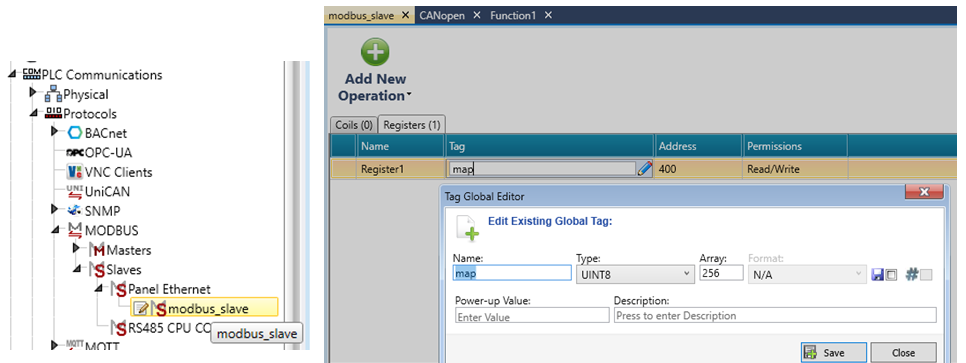
L'exemple ci-dessous utilise EcoStruxure Basic Expert de SchneiderElectric qui permet la programmation et la simulation des automates de la famille M221.
Exemple ascenseur
(fichiers 15-demo_ascenseur_M221.xrs et 15-demo_ascenseur_M221.smbp)
Préparation côté WRsimulateur :
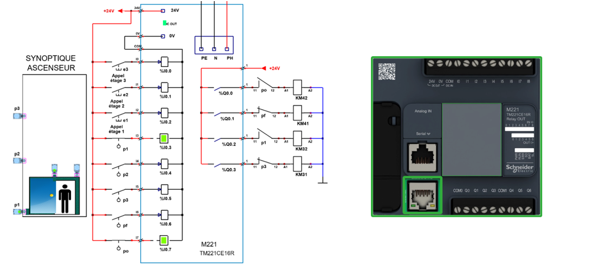
- La commande de l'ascenseur nécessite 8 entrées et 4 sorties TOR. On peut utiliser un M221 type TM221CE16R qui dispose de 9 entrées TOR et de 7 sorties à relais.
- Adressage des entrées TOR : %I0.0, %I0.1, %I0.2, %I0.3, %I0.4, %I0.5, %I0.6, %I0.7, %I0.8
- Adressage des sorties : %Q0.0, %Q0.1, %Q0.2, %Q0.3, %Q0.4, %Q0.5, %Q0.6
- L'exemple étudié implante 8 objets d'entrée et 4 objets de sortie en les identifiant avec les adresses API standards.
Affectation des entrées
| adresse | mnémonique | commentaire |
| %I0.0 | E3 | appel étage 3 |
| %I0.1 | E2 | appel étage 2 |
| %I0.2 | E1 | appel étage 1 |
| %I0.3 | P1 | cabine à létage 1 |
| %I0.4 | P2 | cabine à létage 2 |
| %I0.5 | P3 | cabine à létage 3 |
| %I0.6 | PF | porte cabine fermée |
| %I0.7 | PO | porte cabine ouverte |
Affectation des sorties
| adresse | mnémonique | commentaire |
| %Q0.0 | OUVRIR | Ouvrir porte |
| %Q0.1 | FERMER | Fermer porte |
| %Q0.2 | DESCENDRE | Descendre cage |
| %Q0.3 | MONTER | Monter cage |
Préparation côté EcoStruxure Machine Expert--Basic
Le programme complet 15-demo_ascenseur_M221.smbp est disponible dans le dossier : 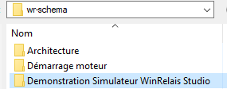
Mise en correspondance des tableaux d'entrées/sorties avec la table d'échange ajustée sur l'adresse de départ %MW400 voir le mappage modbus:
| adresse | mappage MODBUS | mnémonique | commentaire |
| %I0.0 | %MW500 :X0 | E3 | appel étage 3 |
| %I0.1 | %MW500 :X1 | E2 | appel étage 2 |
| %I0.2 | %MW500 :X2 | E1 | appel étage 1 |
| %I0.3 | %MW500 :X3 | P1 | cabine à létage 1 |
| %I0.4 | %MW500 :X4 | P2 | cabine à létage 2 |
| %I0.5 | %MW500 :X5 | P3 | cabine à létage 3 |
| %I0.6 | %MW500 :X6 | PF | porte cabine fermée |
| %I0.7 | %MW500 :X7 | PO | porte cabine ouverte |
| adresse | mappage MODBUS | mnémonique | commentaire |
| %Q0.0 | %MW400 :X0 | OUVRIR | Ouvrir porte |
| %Q0.1 | %MW400 :X1 | FERMER | Fermer porte |
| %Q0.2 | %MW400 :X2 | DESCENDRE | Descendre cage |
| %Q0.3 | %MW401 :X3 | MONTER | Monter cage |
Dans l'onglet Programmation ->Outils -> Liste de symboles, on trouve l'assignation des entrées/sorties qui correspond aux tableaux précédents: 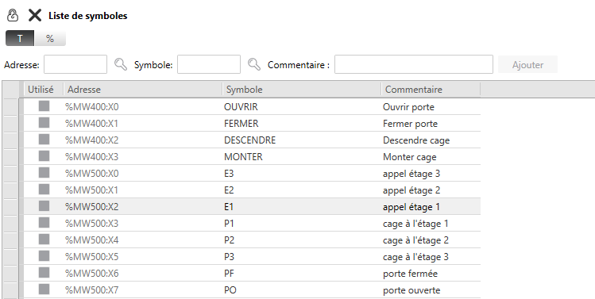
Programme API: 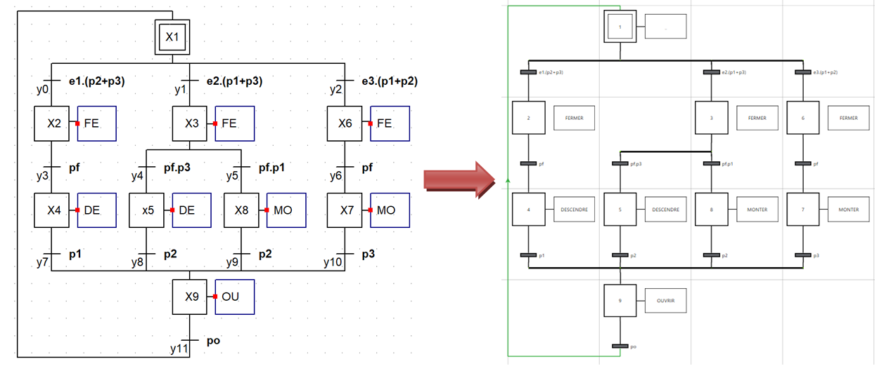 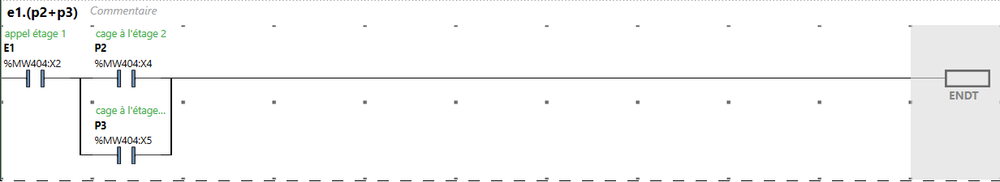 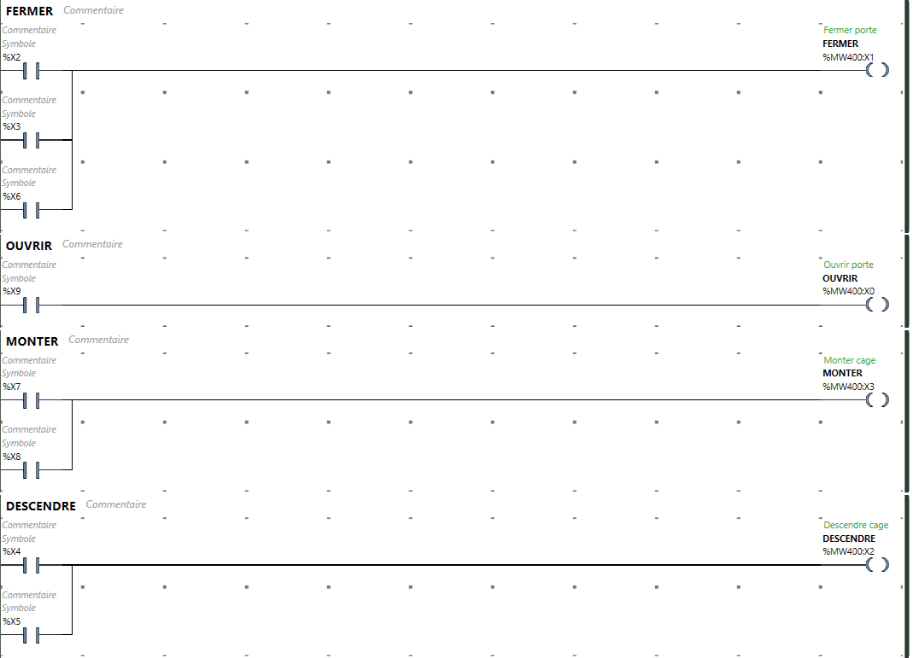
Démarrer le contrôleur AVANT de lancer le simulateur en activant les boutons Lancer le simulateur et Démarrer le contrôleur dans l'onglet Mise en service d'EcoStruxure:
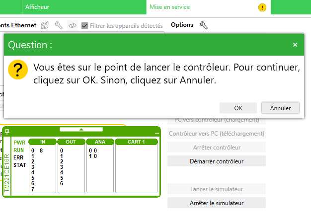
Construction d'un objet API
-
Un automate est construit avec les objets élémentaires :
- input# pour les entrées TOR,
- output# pour les sorties TOR,
- analog_input# pour les entrées analogiques,
- analog_output# pour les sorties analogiques,
- plc_supply# pour l'alimentation de l'API
-
Toutes les E/S ont pour parent l'objet plc_supply afin d'asservir l'alimentation de ces E/S à l'alimentation de l'automate.
- Le serveur MODBUS est implicitement attaché à l'automate en place dans le schéma.
- On ne peut placer qu'un seul automate dans le schéma.
- Des exemples d'automates sont disponibles dans le dossier blocs_simulables à partir de la commande 'Ouvrir un bloc' de WinRelais.
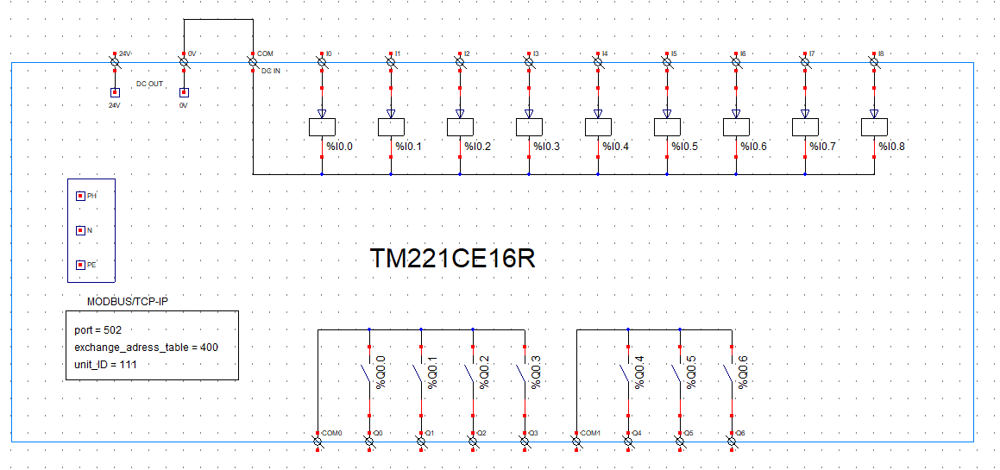 Toutes ces empreintes d'automate sont ajustables et modifiables selon les besoins.
Entrées/Sorties logiques
| input, output | bibliothèque _api |
|---|---|
| %Ir.v ou %Qr.v | r = [0,5] v = [0,31] |
| parent = | nom de l'objet plc_supply# |
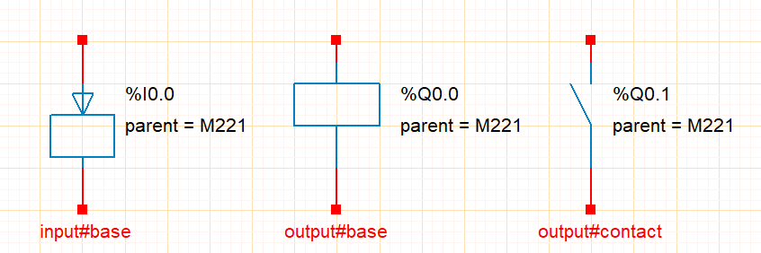
Entrées analogiques
| analog_input | bibliothèque _api |
|---|---|
| %IWr.v | r = [0,5] v = [0,3] |
| parent = | nom de l'objet plc_supply# |
| input_type = | U ou I |
| input_range = | (min,max) V [-10,10] V ou (min,max) mA [0, 20] mA |
| input_scale = | min,max [-32768, 32767] |
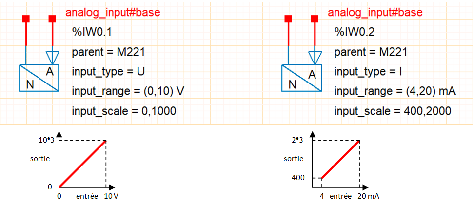
Sorties analogiques
| analog_output | bibliothèque _api |
|---|---|
| %QW0.0 | r = [0,5] v = [0,3] |
| parent = | nom de l'objet plc_supply# |
| output_type = | U ou I |
| output_range = | (min,max) V [-10,10] V ou (min,max) mA [0, 20] mA |
| output_scale = | min,max [-32768, 32767] |
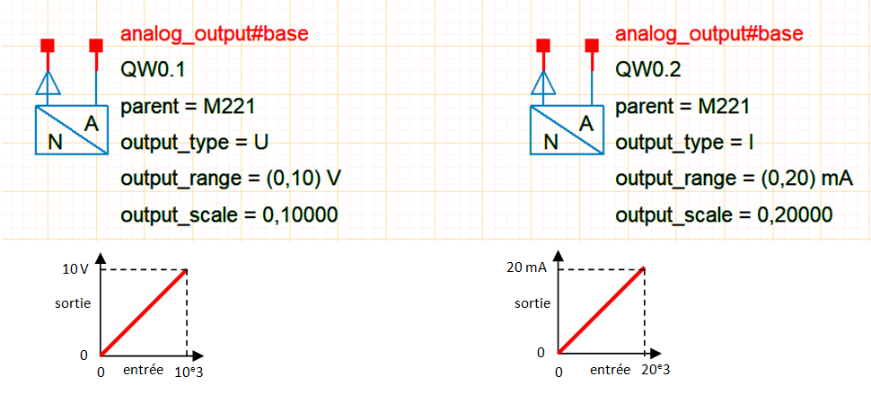